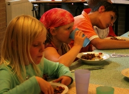
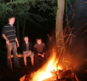

Kinderkamp
Kinderkamp op de Strubben, informatie voor ouders
De leiding van een kinderkamp op de Strubben wil op een speelse en creatieve wijze het geloof door geven aan de kinderen. Uw kind zal een week meemaken waarin het niet alleen dichter bij het geloof komt, maar kinderen uit heel Nederland zal ontmoeten en veel zal bewegen en spelen. Een week van huis is voor een kind een behoorlijke periode, maar wanneer het eenmaal een plekje heeft gevonden in de groep zal het zeker na een week zeggen: "Ik wil weer terug!!!"
Een dagje op kamp
Het kinderkamp is bedoeld voor kinderen vanaf 8 jaar t/m het einde van de basisschooltijd. In de zomer dat uw kind naar de middelbare school gaat, mag hij/zij ook voor een tentenkamp kiezen. Om u een indruk te geven van het kinderkamp op de Strubben, een korte schets van een dagje op kamp vanuit de ogen kampleider Nicholas Graff, die vele jaren het kinderkamp begeleidde:
Om acht uur gaat de wekker. Dan gaan de kinderen zich opfrissen en klaar maken voor het ontbijt dat door de leiding al is klaargezet met hulp van de corveelploeg. De kinderen helpen mee met de afwas en het dekken en afruimen van de tafel.
Ochtendprogramma
Na het eten is er een ochtendprogramma van 10:00 tot 12.00. Meestal bestaat dit uit een serieus iets, een overdenking, een Bijbelverhaal of het aanleren van een liedje. Daarna is er even de tijd om te rommelen. Er zijn verschillende mogelijkheden op het terrein om te rommelen. Een klimtoestel, spelen in het bos, een boekje lezen, de leiding plagen en ga zo maar door. Natuurlijk is het spelen met elkaar het leukst. Als je het maar samen doet.
Middagprogramma
's Middags wordt er warm gegeten. De ene keer aardappels, groente en vlees, maar ook chili con carne of stamppot rauwe andijvie met spekjes én worst. Ook is er een dag voor nasi! Al het eten wordt gemaakt door een ploeg vrijwilligers. Deze keuken bereidt de maaltijden voor het gehele kamp (100 personen). Vergeet u niet om door te geven of uw kind vegetarisch is of bijvoorbeeld een allergie heeft?

Na het eten is het tijd om te gaan knutselen in het verlengde van de ochtend. Er wordt meestal voortgeborduurd op een thema dat die ochtend is aangestipt. Dagthema's noemen we dat. Elke dag heeft zo zijn sub-thema. Maar er kunnen ook andere activiteiten gedaan worden. Dat is natuurlijk een verrassing. Wat ik wel kan vertellen is dat uw kind een dagje uit gaat. Een dag zwemmen in "Nooitgedagt" bijvoorbeeld. Of naar een grote speeltuin of een pretpark. Als het mooi weer is, kunnen we 's middags gaan zwemmen in de Iberenplas. Een natuurwater dat ongeveer 1000 meter verderop ligt.
Gezamenlijke activiteiten
Ook zijn er gezamenlijke activiteiten waaraan uw kind deel kan nemen. Samen met de andere kampen wordt er elke dag een Kampetitie gehouden. Een sport- en speluurtje in de vorm van een competitie. Het winnende team krijgt een heerlijke romige ronde verrassing aan het einde van de week.
Avondprogramma

Na het avondeten, dat bestaat uit een broodmaaltijd, is het tijd voor iets leuks. De bonte avond? Of een bosspel? Of gewoon wandelen in het bos met zijn allen? Of een kampvuur! We hebben in het kinderkamp onze eigen kampvuurplaats op onze eigen afgebakende plek op het terrein. Speciaal aangepast voor de kleinste kampers. Niet te groot, maar wel lekker spannend!!
Naar bed
Aan het einde van de dag, sluiten we af met een liedje of een gedichtje. En dan op bed! Eerst wordt er flink lawaai gemaakt door de kids, maar na een uurtje zijn ze meestal wel rustig. Daar zorgt de leiding wel voor. En na dag twee slapen ze vaak binnen vijf minuten...
Motivatie
Het is ontzettend leerzaam en ontroerend om te ervaren hoe kinderen in hun geloof staan. Zo ontzettend goudeerlijk naar zichzelf en naar God af en toe dat het me tot op het bot raakte. Dit heeft me elk jaar weer gemotiveerd om een kamp te gaan leiden. Tijdens een kringgebed onder de heldere sterrenhemel in de donkere nacht zei een van de jongeren "Lieve vader, ik wil U vragen of U de zegen over dit kamp wil uitstrooien als zout over de aardappels..." Zeg nou zelf... dat geeft je toch kippenvel. Een rilling liep over mijn rug terwijl we onder die sterrenhemel stonden.
Op deze website kunt u uw kind aanmelden voor het Strubbenkamp. Na de aanmelding krijgt u thuis post met additionele informatie een een leuke brief voor uw kind.
Ik zou zeggen... tot op kamp!